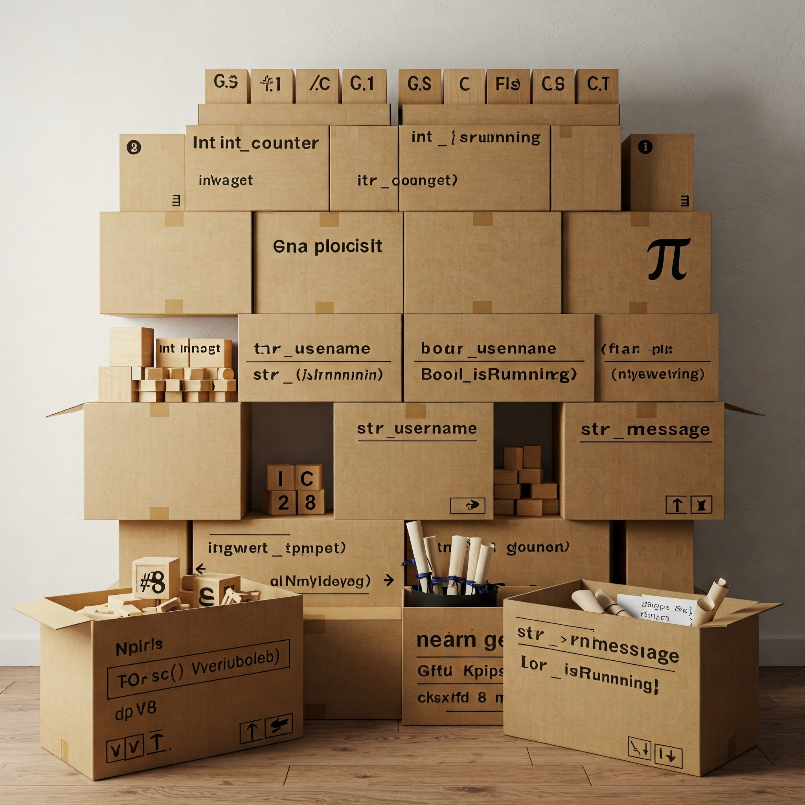

Variáveis¶
Variáveis são a base para qualquer processamento computacional, funcionando como os contêineres que armazenam os dados com os quais o programa trabalha
Durante a execução de qualquer tipo de programa, os computadores estão manipulando informações parciais ou finais. Para que essas informações fiquem disponíveis e possam ser processadas ou mesmo apresentadas, o computador precisa guardá-las em sua memória. Para acessar individualmente cada uma destas informações, a princípio, seria necessário saber o que está guardado lá (um número? uma palavra?) e a posição inicial deste conjunto de bytes na memória. Isso seria muito complicado para o programador, além de engessar demais o programa (as informações teriam que estar, sempre, nos mesmos lugares da memória).
Para contornar esta situação criou-se o conceito de variável, que é uma entidade destinada a guardar uma informação.
Podemos pensar nas variáveis como caixas etiquetadas em uma sala. Cada caixa (variável) tem uma etiqueta (nome) que nos permite encontrá-la facilmente, um tipo específico de conteúdo que pode armazenar (tipo de dado), e o conteúdo em si (valor). Assim como não colocaríamos líquidos em uma caixa de papelão, cada variável só pode armazenar dados compatíveis com seu tipo.
Os nome de uma variável é um identificador simbólico que permite ao programador referenciar a informação armazenada sem precisar lidar diretamente com endereços de memória.
Atributos, ciclo de vida e escopo¶
Uma variável possui três atributos fundamentais: um nome, um tipo de dado associado à mesma e a informação por ela guardada.
O ciclo de vida de uma variável geralmente envolve quatro etapas principais: declaração, onde informamos ao computador que precisamos de um espaço na memória; inicialização, quando atribuímos um valor inicial à variável; utilização, quando lemos ou modificamos seu valor durante a execução do programa; e, em algumas linguagens, destruição, quando a memória ocupada pela variável é liberada para reutilização. Entender este ciclo é fundamental para usar variáveis de forma eficiente e evitar erros comuns.
Além dos atributos básicos, as variáveis também possuem um escopo, que determina onde no programa elas podem ser acessadas. Variáveis locais são visíveis apenas dentro do trecho de código (função ou bloco) onde foram declaradas, enquanto variáveis globais podem ser acessadas em todo o programa. O gerenciamento adequado do escopo é crucial para evitar conflitos de nomes e garantir que os dados sejam acessíveis apenas onde necessário.
Tipagem estática ou dinâmica¶
Algumas linguagens de programação permitem que se defina uma variável sem indicar explicitamente o seu tipo; outras linguagens, por sua vez, obrigam que o programador indique explicitamente o tipo de dados que vai ser guardado na variável.
As linguagens que exigem declaração explícita de tipos são conhecidas como linguagens de tipagem estática. Nelas, o programador deve informar previamente qual tipo de dado cada variável irá armazenar, como números inteiros, números decimais, texto ou valores lógicos. Exemplos dessas linguagens incluem C, C++, Java e TypeScript. Esta abordagem oferece várias vantagens significativas. Primeiramente, ela permite que o compilador detecte erros de tipo durante a compilação, antes mesmo do programa ser executado. Por exemplo, se um programador tentar armazenar texto em uma variável declarada como número, o compilador identificará esse erro imediatamente. Isso resulta em programas mais robustos e confiáveis, pois muitos erros são capturados precocemente no processo de desenvolvimento.
Além disso, a tipagem estática frequentemente leva a um melhor desempenho do programa. Como o compilador conhece antecipadamente os tipos de todas as variáveis, ele pode otimizar o código gerado, alocando a quantidade exata de memória necessária e escolhendo as instruções mais eficientes para manipular cada tipo de dado. Isso é particularmente importante em sistemas com recursos limitados ou aplicações que exigem alta performance.
Por outro lado, as linguagens de tipagem dinâmica, como Python, JavaScript, Ruby e PHP, não exigem que o programador declare explicitamente os tipos das variáveis. Nestas linguagens, o tipo é inferido automaticamente com base no valor atribuído à variável e pode mudar durante a execução do programa. Esta flexibilidade torna a programação mais ágil e intuitiva para muitos desenvolvedores, especialmente iniciantes. O código tende a ser mais conciso, pois elimina a necessidade de declarações de tipo, e o desenvolvimento pode ser mais rápido, já que há menos detalhes técnicos para se preocupar inicialmente.
A tipagem dinâmica também facilita certos padrões de programação e manipulação de dados heterogêneos. Por exemplo, uma lista em Python pode conter elementos de diferentes tipos sem problemas, enquanto em linguagens de tipagem estática isso geralmente requer soluções mais complexas. Esta flexibilidade é particularmente útil em cenários como processamento de dados, prototipagem rápida e desenvolvimento web.
No entanto, esta liberdade vem com um custo. Erros de tipo em linguagens dinâmicas só são descobertos durante a execução do programa, potencialmente resultando em falhas inesperadas em produção. Além disso, sem declarações explícitas de tipo, o código pode se tornar menos autodocumentado, dificultando a compreensão de qual tipo de dado uma função espera receber ou retornar.
Algumas linguagens modernas, como Kotlin, Swift e Scala, adotam uma abordagem híbrida conhecida como "inferência de tipo". Nestas linguagens, o programador pode optar por declarar explicitamente os tipos ou deixar que o compilador os infira automaticamente. Isso oferece um equilíbrio entre a segurança da tipagem estática e a conveniência da tipagem dinâmica, permitindo código conciso sem sacrificar a verificação de tipos em tempo de compilação.
Para ilustrar estes conceitos na prática, vejamos exemplos simples em duas linguagens populares:
A escolha entre tipagem estática e dinâmica frequentemente depende do contexto do projeto, das preferências da equipe e dos requisitos específicos da aplicação. Projetos que priorizam robustez, desempenho e manutenção a longo prazo geralmente se beneficiam da tipagem estática, enquanto aqueles que valorizam agilidade, flexibilidade e prototipagem rápida podem preferir a tipagem dinâmica.
Ao utilizar variáveis, o mesmo código pode ser reutilizado para diferentes entradas, tornando os programas mais versáteis e reutilizáveis: ao invés de criar um algoritmo que funcione apenas com valores específicos, podemos usar variáveis para criar soluções genéricas que funcionam com qualquer conjunto de dados válido. Por exemplo, um algoritmo para calcular a área de um retângulo pode usar variáveis para comprimento e largura, permitindo que o mesmo algoritmo calcule a área de qualquer retângulo, não apenas um com dimensões predefinidas. Sem variáveis, não teríamos como capturar e utilizar dados fornecidos pelo usuário durante a execução do programa.
As variáveis também facilitam a manutenção e atualização dos algoritmos. Se precisarmos alterar um valor usado em várias partes do algoritmo, podemos simplesmente modificar o valor da variável correspondente em um único lugar, em vez de procurar e alterar cada ocorrência desse valor no código.